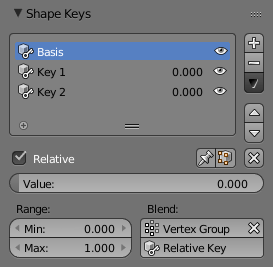

形态键面板¶
参考
模式：所有模式
面板：

形态键面板。
- 活动的形态键索引
一个 列表视图 。
- 值
- 当前形态键的值（0.0到1.0）。
- 哑的（眼睛的图标）
- 是形态键在3D View中不可见。
- 特殊的
- 迁移形态键
- 迁移活动的形态键到另一个物体上。选择两个物体，把活动的形态键拷贝到活动物体上。
- 连接为形状
- 从另一个物体迁移 当前形状 。选择两个物体，把形状拷贝到活动物体上。
- 镜像形态键
- 如果你的网格均匀且对称，在 物体模式 下，你可以在X轴上镜像形态键。除非网格是对称的，否则不能使用这种方法。如果使用，可以在编辑模式下选择 。
- 镜像形态键（拓扑）
- 同 镜像形态键 类似，但是它根据网格的拓扑检测镜像顶点。这种情况下，网格的顶点不用完全对称也可以。
- 创建新的形态键
- 用当前变形物体的添加新的形态键。
- 删除所有形态键
- 删除所有的形态键。
- 相对的
- 设置形态键为 相对的 或 绝对的 。
- 仅显示（别针形的图标）
- 在3D View中显示形态键但不进行插值。在编辑模式下，仅显示选项自动勾选，除非下面的设置项被打开。
- 编辑模式
- 在 编辑模式 下更改形态键。
相对形态键¶
相对形态键从已选的形态键变形而来。默认情况下，从第一个形态键变形而来的所有的相对形态键称为基础形态键（basis shape key）。

相对形态键选项。
- 清除权重
X - 设置所有值为0.
- 值
- 活动形态键的值。
- 范围
- 活动形态键范围的最大最小值。
- 融合
- 顶点组
- 限定活动形态键的变形到一个顶点组。
- 相对的
- 选择形态键来进行变形。
绝对形态键¶
绝对形态键从前一个到下一个形态键变形。它们主要用于将物体随时间变形到不同的形状。

绝对形态键选项。
- 重设时间 （时钟形图标）
- 重设绝对形态键的时间。
- 插值
控制形态键间的插值。
线性（linear），基准的（cardial），Catmull-Rom, B样条曲线（B-Spline）

不同类型的插值。
红色线表示键（黑色点）间的插值。- 求值时间
- 用于控制形态键的影响。